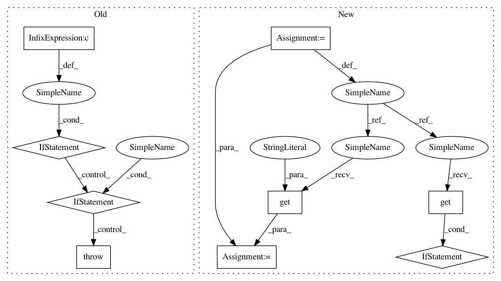

d22b0ccbccd7c8659c8ec87556a60a8321ccab1c,src/pudl/etl.py,,_validate_params_ferc1,#Any#,249
Before Change
except KeyError:
ferc1_dict["debug"] = False
if (not ferc1_dict["debug"]) and (ferc1_dict["ferc1_tables"]):
for table in ferc1_dict["ferc1_tables"]:
if table not in pc.pudl_tables["ferc1"]:
raise AssertionError(
f"Unrecognized FERC table: {table}."
)
if not ferc1_dict["ferc1_years"]:
return {}
else:
return ferc1_dict
After Change
ferc1_dict["ferc1_years"] = etl_params.get("ferc1_years", [None])
// the tables will default to all of the tables if nothing is given
ferc1_dict["ferc1_tables"] = etl_params.get(
"ferc1_tables", pc.pudl_tables["ferc1"])
ferc1_dict["debug"] = etl_params.get("debug", False)
if not ferc1_dict["debug"]:
check_for_bad_tables(
try_tables=ferc1_dict["ferc1_tables"], dataset="ferc1")
if not ferc1_dict["ferc1_years"]:
return {}
else:
return ferc1_dict
In pattern: SUPERPATTERN
Frequency: 3
Non-data size: 9
Instances
Project Name: catalyst-cooperative/pudl
Commit Name: d22b0ccbccd7c8659c8ec87556a60a8321ccab1c
Time: 2020-11-12
Author: cgosnell@catalyst.coop
File Name: src/pudl/etl.py
Class Name:
Method Name: _validate_params_ferc1
Project Name: catalyst-cooperative/pudl
Commit Name: ead53c9bd3205abfe3fdec30f8e6c8b39ea04329
Time: 2020-11-12
Author: cgosnell@catalyst.coop
File Name: src/pudl/etl.py
Class Name:
Method Name: _validate_params_ferc1
Project Name: pantsbuild/pants
Commit Name: d6b1ade52fe313bd853667ea365c110ed06fc74a
Time: 2015-11-05
Author: benjyw@gmail.com
File Name: src/python/pants/option/parser.py
Class Name: Parser
Method Name: _validate